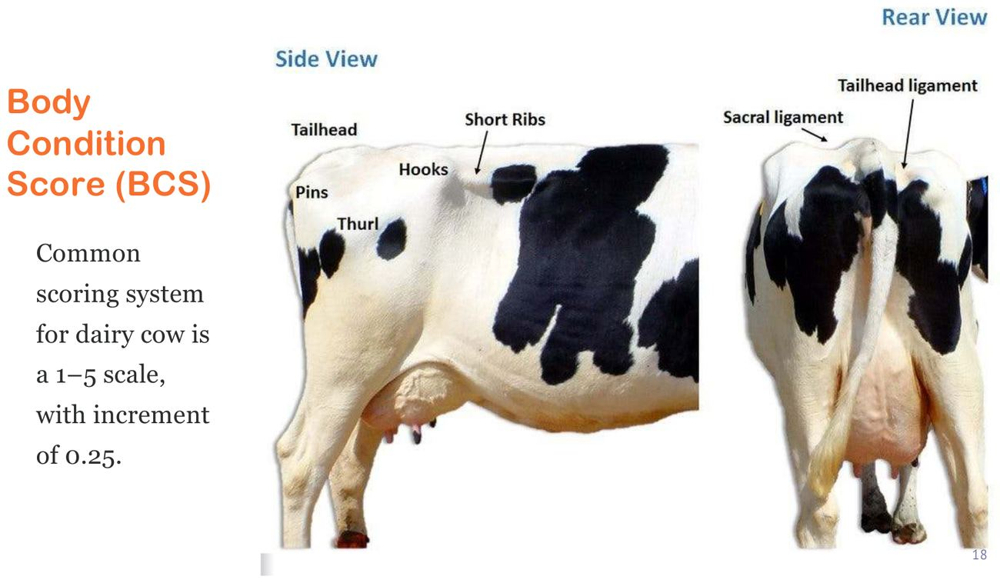
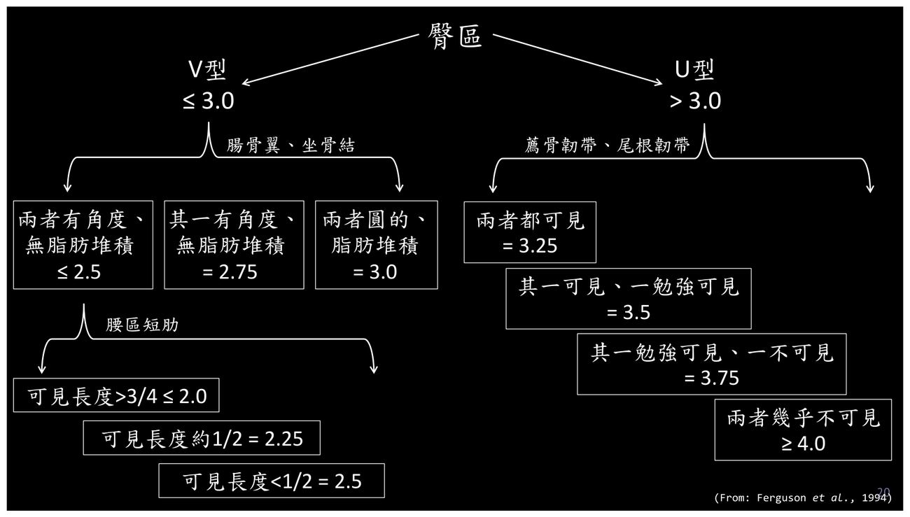
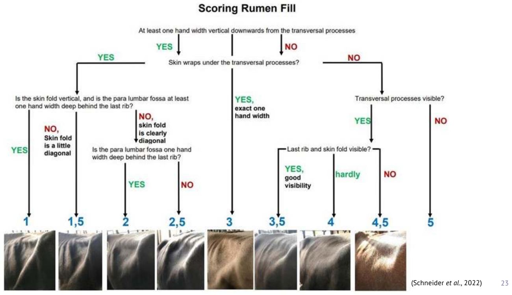

大方向與重點摘要
- 這章在講什麼
- 〈臨床檢查與眼科疾病〉講義的前半（p.1–33）：先複習反芻動物的四個胃，再走一遍完整的臨床檢查流程：病史 → 遠觀 → 體態評分（BCS）與瘤胃充盈評分（RF）→ 體溫、聽診、叩診、衝擊觸診 → 淋巴結與頭頸 → 直腸觸診。後半眼科見姊妹頁。
- 為什麼重要
- 牛羊看診常受經濟與時間限制，不一定能做完整檢查，也很少有影像與血檢可用，所以獸醫要熟到知道「哪些一定要做、哪些可省」。瘤胃蠕動、ping、BCS、RF 這些靠手和耳朵的檢查，就是大動物診斷的主力。
- 這章要抓的重點
-
- 四個胃：瘤胃、網胃（蜂巢胃）、瓣胃（重瓣胃）＝前胃，皺胃＝真胃；瘤胃 90–120 L、理想 pH 6.5–6.8；唾液 pH 8.0–8.5、每天至少 130–150 L；反芻每天至少 7 小時。
- 病史：主訴的時間與急緩、最近分娩日、生產數據、吃什麼、怎麼吃、拒吃哪些、治療、牛群病史、疫苗驅蟲、放牧或畜舍。
- 檢查順序：先遠觀 → 一側 → 另一側 → 後方 → 最後頭頸；遠觀看姿勢、步態、行為、體況。
- BCS：1–5 分、每 0.25 一級；站立、從後方 45° 評估；臀部 V 型 ≤ 3.0、U 型 > 3.0。
- RF：1–5 分，看左側腰旁窩；以橫突下一掌寬、皮膚皺褶方向判斷。
- TPR：成牛體溫 38.0–39.0°C、心跳 60–80、呼吸 15–35；瘤胃蠕動 3–5 次／2 分鐘。
- 叩診聽診：左側 ping → 瘤胃或皺胃左方移位（LDA）；右側 → 皺胃右方移位（RDA）或扭轉、盲腸、螺旋結腸；右側衝擊觸診有水聲 → 腹腔積液。
- 觸診：淋巴結（腮腺、下頜、咽後、肩前、乳房上）、腹痛、肢蹄；頭頸對稱、分泌物、口腔、脫水；直腸觸診。
- 容易混淆
- 正常值四組不能混：犢牛與羔羊的體溫、心跳、呼吸都比成體高（見比較表）。BCS 與 RF 都是 1–5 分，但 BCS 看長期體脂（臀部、腰部），RF 看最近幾小時的採食（左腰旁窩）。前胃是瘤胃、網胃、瓣胃三個，皺胃才是有消化腺的真胃（補充）。
- 考試可能怎麼問
（推測） - 四個胃的名稱與瘤胃容量、pH；唾液的緩衝與量；反芻時數；病史要問的項目；檢查順序；BCS 的分數與 V／U 判斷；RF 評估位置；各物種年齡的體溫、心跳、呼吸；瘤胃蠕動頻率；左右 ping 的鑑別；可觸診的淋巴結。
內容以老師講義為主體。標示「補充」的段落（含「讀書補充Note」）是講義以外的延伸；標示「推測」的是依講義強調處推測的出題方向，不是考古題。考試範圍以老師上課為準。圖片為老師講義截圖。
主訴、分娩、吃什麼、牛群
姿勢、步態、行為、BCS、RF
T、聽診、叩診、衝擊觸診
對稱、分泌物、口腔、脫水
反芻動物的胃 The Special Stomach
檢查之前先把四個胃的位置放進腦中：左邊大部分是瘤胃，右邊是皺胃、瓣胃與腸，聽診叩診時才知道自己在聽什麼。
四個胃室必考
反芻動物（牛、綿羊、山羊、鹿）有一個大胃，分成四個高度特化的胃室：瘤胃（rumen）、網胃（reticulum）、瓣胃（omasum）合稱前胃（foregut），以及皺胃（abomasum）。這讓牠們能發酵、萃取單胃動物無法分解的粗纖維植物（p.2）。
| 胃室 | 俗稱 | 講義重點 | 補充 |
|---|---|---|---|
| 瘤胃 Rumen | — | 主要消化器官，90–120 L；無數共生微生物把飼料消化成 VFA；分氣、液、固（纖維墊 fiber mat）三層；理想 pH 6.5–6.8 | 佔據腹腔左側大部分；黏膜有乳突 |
| 網胃 Reticulum | 蜂巢胃 | 黏膜呈蜂巢狀（p.10 照片 c） | 位於最前方、緊貼橫膈；金屬異物易停在這裡（創傷性網胃炎） |
| 瓣胃 Omasum | 重瓣胃 | 黏膜呈一片片葉狀（p.11） | 吸收水分與 VFA |
| 皺胃 Abomasum | — | p.12 照片 | 真胃，有消化腺分泌胃酸與酵素；位於右下腹，會移位 |
瘤胃的 pH 與唾液必考
- 瘤胃理想 pH 6.5–6.8。
- 反芻促進唾液分泌；唾液 pH 8.0–8.5，含碳酸鹽與磷酸鹽，是瘤胃環境的緩衝劑。
- 唾液量每天至少 130–150 L，甚至可達 220–250 L（Maekawa et al., 2002）（p.8）。
反芻 Rumination必考
- 反芻的時間與頻率取決於粗纖維的比例與長度，以及餵飼次數。
- 反芻每天至少 7 小時（p.9）。
纖維夠長 → 反芻多 → 唾液多（pH 8.0–8.5 的緩衝液）→ 瘤胃 pH 維持 6.5–6.8。纖維太短或精料太多，反芻少、唾液少、VFA 又產得快 → pH 下降（推論，連到營養頁 VFA 一節）。臨床上「反芻時間變少」常是牛不舒服或日糧有問題的早期訊號（補充）。
網胃、瓣胃、皺胃的位置理解
※ 講義 p.11 寫「重辦胃」，一般寫作「重瓣胃」。
病史詢問 Obtain the History
病史常常比理學檢查更快把範圍縮小：尤其是「上次分娩是哪天」與「最近吃什麼」。
主訴要問的資訊（p.13–14）必考
這頭動物
- 病程：多久了？漸進或突然？
- 最近一次分娩日（母畜）
- 生產參數（乳用動物：乳量等）
- 其他伴隨症狀
- 吃什麼、怎麼餵（拒吃部分或全部飼料？）
治療與牛群
- 治療史
- 牛群以前出現過的疾病
- 疫苗與驅蟲紀錄
- 放牧或畜舍飼養方式
補充：為什麼「最近分娩日」這麼重要？產後幾天內是低血鈣、胎衣滯留、皺胃移位、酮症的高峰（見轉換期頁），知道分娩日就能先排出優先順序。「拒吃哪一種飼料」也有意義：只吃粗料不吃精料，常見於酮症或瘤胃酸中毒後（補充）。
檢查原則與遠觀 Visual Examination
牛羊的檢查要有固定順序，而且第一步一定是站遠一點看。
理學檢查的目的與限制理解
檢查順序（p.17）必考
observe from a distance
補充：頭頸放最後，因為檢查口腔、眼睛最容易讓牛緊張甚至需要保定；先做不需保定的部分，才能拿到安靜狀態下的心跳、呼吸與瘤胃蠕動。
遠觀要看什麼（p.18）必考
- 姿勢（posture）、步態（gait）、行為（behavior）
- 體況（physical condition）：體態評分（body condition score, BCS）、瘤胃充盈評分（rumen fill score, RF）
體態評分 Body Condition Score (BCS)
BCS 是用眼睛估皮下脂肪：先看臀部是 V 還是 U，再往下細分。
評分方式必考
- 乳牛常用 1–5 分，每 0.25 分一級（p.19）。
- 牛要站立，從後方 45° 角評估（p.20）。
- 觀察部位：腸骨翼（hooks）、坐骨結（pins）、薦腸韌帶（sacral ligament）、薦尾韌帶（tailhead ligament）、腰椎橫突（short ribs）、臀部區。

判斷流程（Ferguson et al., 1994；p.21）必考
| 臀區形狀 | 再看什麼 | 表現 | BCS |
|---|---|---|---|
| V 型（≤ 3.0） | 腸骨翼、坐骨結 | 兩者都圓、有脂肪堆積 | 3.0 |
| 其一有角度、無脂肪堆積 | 2.75 | ||
| 兩者都有角度、無脂肪堆積 | ≤ 2.5（再看腰椎橫突） | ||
| 腰區短肋（腰椎橫突）可見長度 | < 1/2 | 2.5 | |
| 約 1/2 | 2.25 | ||
| > 3/4 | ≤ 2.0 | ||
| U 型（> 3.0） | 薦骨韌帶、尾根韌帶 | 兩者都可見 | 3.25 |
| 其一可見、一勉強可見 | 3.5 | ||
| 其一勉強可見、一不可見 | 3.75 | ||
| 兩者幾乎不可見 | ≥ 4.0 |

先問「V 還是 U」切在 3.0。V 型往下看骨頭角不角（腸骨翼、坐骨結）→ 再看短肋露多長；U 型往上看韌帶還看不看得到，越看不到越胖。
補充（臨床）：BCS 的用途是追蹤一頭牛在泌乳週期中的體脂變化。乾乳期太胖的牛產後採食更差、體脂動員更多，酮症與脂肪肝風險較高；產後 BCS 掉得太快也代表負能量平衡嚴重。理想的分娩 BCS 範圍各文獻略有不同，以老師上課為準。
瘤胃充盈評分 Rumen Fill (RF) Score
RF 看的是左側腰旁窩凹多深：反映的是過去幾小時有沒有吃、瘤胃有沒有在動。
評分方式必考
判斷流程（Schneider et al., 2022；p.24）理解
| 第一個問題：腰椎橫突往下「至少一掌寬」的凹陷？ | 接著問 | RF |
|---|---|---|
| YES，且皮膚包到橫突下方 | 皮膚皺褶垂直、且最後肋骨後方的腰旁窩至少一掌寬深 | 1 |
| 皮膚皺褶略斜 | 1.5 | |
| 皺褶明顯斜，腰旁窩仍一掌寬深 | 2 | |
| 皺褶明顯斜，腰旁窩不到一掌寬 | 2.5 | |
| 剛好一掌寬 | — | 3 |
| NO（不到一掌寬） | 橫突可見，最後肋骨與皮膚皺褶清楚可見 | 3.5 |
| 橫突可見，最後肋骨與皺褶勉強可見 | 4 | |
| 橫突可見，最後肋骨與皺褶看不到 | 4.5 | |
| 橫突看不到 | 5 |

RF 低（1–2）代表最近採食少或食糜通過太快，是生病、疼痛、產後採食不足的早期指標；同一群牛 RF 普遍偏低時，要檢查飼槽空間、飼料適口性與飲水。BCS 反映「過去幾週」，RF 反映「過去幾小時到一天」。
體溫、聽診、叩診與衝擊觸診 Physical Examination
大動物理學檢查的核心：TPR 加上瘤胃蠕動，再用叩診聽診找 ping、衝擊觸診聽水聲。
採尿（p.25）看過
補充：輕搓外陰下方皮膚常可誘發排尿；尿液試紙可看尿酮（酮症）、pH（DCAD 監測，見轉換期頁）、蛋白與潛血。
生命徵象正常值必考
| 項目 | 成牛 adult | 犢牛 calf | 山羊／綿羊 goat/sheep | 小羊 kid/lamb |
|---|---|---|---|---|
| 體溫（°C）（p.26） | 38.0–39.0 | 38.5–39.5 | 38.5–39.5 | 39.0–40.0 |
| 心跳（次/分）（p.30） | 60–80 | 70–90 | 70–110 | 110–140 |
| 呼吸（次/分）（p.31） | 15–35 | 20–50 | 15–40 | 40–65 |
※ 講義把呼吸次數也寫成 bpm（breaths per minute）。規律：越小、越輕的動物，三項都越高；羊的體溫比牛高約 0.5°C。
瘤胃聽診（p.27）必考
- 在左側腰旁窩聽（照片位置）。
- 頻率：3–5 次／2 分鐘；另外評估每次收縮的持續時間與強度。
補充：至少聽滿 2 分鐘才判斷；蠕動減少或消失（瘤胃停滯）見於低血鈣、酮症、皺胃移位、疼痛、發燒等多數全身性疾病，是「這頭牛不對勁」的非特異指標。
叩診併聽診 Ping（p.28）必考
一手用手指或叩診槌彈打腹壁，同時用聽診器在旁邊聽；有氣體在張力下的臟器會發出高音調、像敲鐵罐的 ping（原理為補充）。
| 位置 | 可能的來源（講義圖） |
|---|---|
| 左側 | 瘤胃（rumen）、皺胃左方移位（left displaced abomasum, LDA） |
| 右側（較前方、肋弓區） | 皺胃右方移位（right displaced abomasum, RDA）或皺胃扭轉（torsion） |
| 右側（腰旁窩） | 盲腸（cecum）、螺旋結腸（spiral colon） |
左側的 ping 不一定是 LDA：瘤胃本身有氣體也會 ping。圖上 LDA 的區域在瘤胃 ping 的下方偏前、肋骨區。右側的 ping 也要區分是皺胃（較前）還是腸道（盲腸、螺旋結腸，在腰旁窩）。確診通常還要配合衝擊觸診、直腸觸診或穿刺（補充）。
聽到 ping 的位置，對應到可能的臟器。顏色代表來源；虛線橢圓是腰旁窩，黑點是髖結節（tuber coxae），細線是肋骨。
| 在哪裡聽到 ping | 最先想到 | 怎麼進一步確認（補充） |
|---|---|---|
| 左側，背側、腰旁窩 | 瘤胃本身有氣體（例如氣體性鼓脹） | 看左腰旁窩是否鼓脹、瘤胃蠕動；插胃管氣體是否噴出 |
| 左側，肋骨區（瘤胃 ping 下方偏前） | 皺胃左方移位（LDA） | 衝擊觸診聽晃水聲、直腸觸診、穿刺；多見產後 4–6 週乳牛（共筆） |
| 右側，較前方、肋弓區 | 皺胃右方移位（RDA）或扭轉 | 右側衝擊觸診；扭轉常有全身症狀、肋骨呈「sprung rib」外觀（共筆） |
| 右側，腰旁窩 | 盲腸、螺旋結腸 | 直腸觸診、超音波；盲腸擴張與扭轉多在泌乳早期（共筆） |
圖是依講義 p.28 三張圖的位置關係重畫的示意圖，不代表精確的肋骨編號與臟器邊界；確診不能只靠 ping。
右側衝擊觸診 Ballottement（p.29）必考
- 在右側腹部做衝擊觸診，聽到「晃水聲（sloshing）」 → 腹腔內有液體（intraabdominal fluid）。
補充：臨床上常把衝擊觸診和聽診一起做（succussion），聽到晃水聲也可能來自充滿液體的皺胃或腸道，例如皺胃扭轉或腸阻塞。
讀書補充Note - 從後方看腹圍與 ping 區：許凱程老師課堂版（2022 共筆）
| 後方觀察的輪廓 | 代表 |
|---|---|
| 正常 | — |
| 左上（瘤胃側）鼓起 | 瘤胃鼓脹 |
| 兩側上方都鼓 | 氣腹（pneumoperitoneum） |
| 兩側下方都鼓 | 腹水（也可能是雙胞胎） |
| 倒 L 型：左上、左下、右下都鼓 | 迷走神經性消化不良（老師：看到 L 型就是它） |
- 左側：瘤胃可分 3 層直接聽；牛太瘦、瘤胃沒充飽可能沒聲音；皺胃很難聽到，主要靠空腔的 ping 判斷移位；LDA 的 ping 區在瘤胃氣帽下方偏前，兩者可能同時出現。
- 右側：RDA 或扭轉、螺旋結腸、盲腸的 ping；結腸、盲腸較少聽到；子宮也可能因分娩後感染積氣，牛常倒臥、很難處理。
- 前胃排空時間 48–72 小時（反芻需時）。
- 唾液量：共筆的圖示粗料時約 150 L、精料時約 40 L（季昭華老師共筆寫成牛一天 50–60 L，本頁講義寫至少 130–150 L）。
讀書補充Note - 前胃、皺胃與腸道疾病：許凱程老師「非傳染性消化道疾病」（2022 共筆）
本學期講義沒有這一堂，以下整理自 2022 共筆，供理解本頁 ping 與腹圍的意義。
1. 急性消化不良
- 簡單型：主要在瘤胃；厭食、乳量減少、四肢冷；治療用健康牛瘤胃液（約 4–6 L、一天一次，單純遲滯 2–3 天有效）、緩瀉劑、補鈣；要和酮症區別（驗尿或血酮）。
- 中重度：類似乳酸酸中毒；食慾與乳量劇降、腸胃完全停滯、2–6 週後出現蹄葉炎；可有氮血症；治療 IV 或 SC 給鈣、緩瀉劑、口服活性碳、瘤胃灌洗、必要時瘤胃切開。
2. 瘤胃乳酸酸中毒（grain overload）
- 進食 6 小時內 Streptococcus bovis 把澱粉分解成乳酸；L 型代謝快、D 型慢 → D-乳酸酸中毒；pH 降到 4.5–5.0 時除了 S. bovis 其他微生物都死光 → 瘤胃停滯；乳酸提高滲透壓 → 水被吸進瘤胃 → 脫水；瘤胃炎 → 細菌與內毒素進入門脈。
- 症狀：脫水、乳量劇降；心跳 90–120、呼吸 50–80；心跳超過 90 不可以 IV 給鈣；瘤胃完全停滯；體表冷、體溫下降、下痢。
- 檢驗：瘤胃液 pH 4.5–5.0（胃管、經腹壁穿刺或剖檢取液）；代謝性酸中毒；嗜中性球減少伴左移；明顯氮血症。
- 治療：胃管大量輸液、10–20 加侖水灌洗瘤胃、氧化鎂、活性碳與健康瘤胃液、鈣與輸液；瘤胃活動恢復前不要讓牛喝飽水（會再脹）。
- SARA：長期 VFA 堆積 → 瘤胃炎 → 細菌經門脈到肝 → 肝膿瘍，到後腔靜脈可造成血栓；也容易誘發皺胃疾病、蹄葉炎。
3. 急性鼓脹
| 氣體性（free-gas） | 泡沫性（frothy） | |
|---|---|---|
| 原因 | 精料過多 → VFA → pH 下降 → 瘤胃靜止；或無法噯氣：低血鈣、迷走神經受傷、食道阻塞或咽喉損傷、局部腹膜炎、李斯特菌症、破傷風；小牛用桶子喝奶嗆入前胃 | 吃太多青綠飼料或多汁豆科、苜蓿類（台灣少見） |
| 插胃管 | 氣體快速噴出 | 沒有氣體跑出 |
| 治療 | 胃管、鈣、瀉劑、制酸劑、瘤胃液；必要時經皮瘤胃套管針 | 界面活性劑、植物油；嚴重時緊急瘤胃切開 |
症狀：左側腹脹、直腸檢查瘤胃擴張可延伸到右側腹、呼吸困難。
4. 創傷性網胃腹膜炎（hardware disease）
- 牛舌頭有倒鉤、愛吃線狀異物；金屬 1–2 天後被推到網胃，加上地心引力一直停在網胃；穿過胃壁、橫膈甚至心臟 → 心包積液。
- 急性：下顎水腫、頸靜脈怒張（心包炎）、突然完全失食、產乳停止、前腹痛；慢性：體重下降、毛髮、有時厭食、拱背。
- 檢驗：急性低血氯、低血鉀、代謝性鹼中毒（前胃與皺胃蠕動下降或停止）；慢性低蛋白血症。
- 治療：口服磁鐵、抗生素、stall rest（幫助沾黏）、對症、瘤胃切開取異物；後遺症：敗血性心包炎、網胃膿瘍（壓迫迷走神經）。
- 預防：12–14 月齡（或配種驗孕後）投預防性磁鐵；有凹槽的磁鐵最常用。
5. 迷走神經性消化不良
- 創傷性網胃腹膜炎 → 網胃膿瘍 → 迷走神經損傷 → 胃通過障礙；也可來自皺胃扭轉、瀰漫性腹膜炎。
- 症狀：倒 L 型腹圍、心搏過緩（約 60 次/分）、蠕動與反芻下降；超音波可看腹腔液體與纖維蛋白。
- 預後不好；老師：乳量降到 15 L 以下收益無法支付飼養成本可考慮淘汰；支持療法。
6. 皺胃與腸道
- 皺胃移位：左側最常見；右側常伴扭轉（右側切開較易處理）；扭轉時肋骨呈「sprung rib」外觀。
- 皺胃潰瘍：多在產後 4–6 週，第一次接觸 TMR 的頭胎牛最明顯；出血型 → 黑便、黏膜蒼白；穿孔型 → 局部腹膜炎；檢驗 PCV 與蛋白；可輸全血 4–6 L；不可用類固醇、NSAIDs。
- 皺胃阻塞：迷走神經性、扭轉、沾黏、淋巴肉瘤、創傷性網胃腹膜炎等；代謝性鹼中毒；開刀取出。
- 小腸阻塞（扭轉、腸套疊，常見出血性腸症候群）：急性厭食、腹脹、腹痛踢肚子、糞便變少或沒有、代謝性鹼中毒（十二指腸阻塞更嚴重）；右側剖腹探查是唯一辦法。腹痛 DDx：腎盂腎炎（駝背）、盲腸擴張扭轉、子宮扭轉（直腸檢查易誤認為盲腸，超音波可分）、腸繫膜血腫。
- 盲腸擴張與扭轉：多在泌乳早期，盲腸尖端跑向骨盆入口，絕大部分順時針扭轉；常繼發於子宮炎、乳房炎、消化不良 → 低血鈣與內毒素 → 腸阻塞；狀況好用緩瀉劑、補鈣，差則右側剖腹。
⚠ 與講義不同：共筆寫「大動物紅血球有核，所以不能用機器驗 CBC」——這是錯的，反芻獸紅血球沒有核（山羊是因為紅血球太小，見羊理學檢查頁）；共筆另提老師在現場用毛細管離心看 PCV、用折射儀看蛋白，並認為大動物最有意義的檢驗是血氣，這部分可參考。
觸診、頭頸與直腸觸診 Palpation
最後用手摸：淋巴結、腹痛、肢蹄，再到頭頸與直腸。
觸診（p.32）必考
- 淋巴結：腮腺（parotid）、下頜（submandibular）、咽後（retropharyngeal）、肩前（prescapular）、乳房上（supramammary）；圖中另標股前（prefemoral）。
- 腹痛的證據。
- 肢與蹄（feet and leg）。
補充：體表淋巴結全面腫大要想到牛白血病（BLV 引起的淋巴肉瘤），見眼科頁淋巴肉瘤；單一淋巴結腫大多與其引流區域感染有關（例如乳房上淋巴結與乳房炎）。腹痛可用網胃區的壓痛測試（例如抬背法）找創傷性網胃炎。
頭頸部（p.33）必考
- 外觀是否對稱
- 眼、耳、鼻、口有無分泌物
- 口腔：黏膜顏色、病灶、異物
- 脫水程度（hydration）
補充：牛的脫水常用眼球凹陷與頸部或上眼瞼皮膚回彈時間評估，犢牛下痢時特別重要（見仔牛疾病頁）。
直腸觸診 Rectal palpation理解
講義列為頭頸之後的最後一項（p.33），沒有展開細節。
補充：成牛的直腸觸診可以摸到瘤胃背囊、左腎、膀胱、子宮與卵巢、部分腸道；用來評估懷孕、腸道膨脹或扭轉、瘤胃大小（例如瘤胃脹得把左腎推往右邊）。
數字與比較整理 Comparison
把本頁所有正常值和評分放在一起。
正常值總表必考
| 項目 | 數字 |
|---|---|
| 瘤胃容量 | 90–120 L |
| 瘤胃 pH | 6.5–6.8 |
| 唾液 pH、量 | 8.0–8.5；每天至少 130–150 L（可達 220–250 L） |
| 反芻時間 | 每天至少 7 小時 |
| 瘤胃蠕動 | 3–5 次／2 分鐘 |
| 體溫 | 成牛 38.0–39.0；犢牛 38.5–39.5；羊 38.5–39.5；小羊 39.0–40.0 °C |
| 心跳 | 成牛 60–80；犢牛 70–90；羊 70–110；小羊 110–140 |
| 呼吸 | 成牛 15–35；犢牛 20–50；羊 15–40；小羊 40–65 |
BCS vs RF必考
| BCS | RF | |
|---|---|---|
| 評什麼 | 體脂（長期能量平衡） | 瘤胃充盈（近期採食） |
| 分數 | 1–5，每 0.25 | 1–5（流程圖每 0.5） |
| 看哪裡 | 從後方 45°：腸骨翼、坐骨結、薦韌帶、尾根韌帶、腰椎橫突 | 左側腰旁窩：橫突下凹陷、皮膚皺褶、最後肋骨 |
| 第一個切點 | 臀區 V（≤ 3.0）或 U（> 3.0） | 橫突下是否至少一掌寬 |
| 出處 | Ferguson et al., 1994 | Schneider et al., 2022 |
考試方向（推測）
以下是依講義強調的內容推測的出題方向，不是考古題，考試範圍以老師上課為準。
| 可能考法 | 答題重點 |
|---|---|
| 四個胃的名稱 | 瘤胃、網胃（蜂巢胃）、瓣胃（重瓣胃）＝前胃；皺胃 |
| 瘤胃特性 | 90–120 L；微生物把飼料轉成 VFA；氣、液、固三相；pH 6.5–6.8 |
| 唾液 | 反芻促進分泌；pH 8.0–8.5；碳酸鹽與磷酸鹽緩衝；每天至少 130–150 L（可達 220–250 L） |
| 反芻 | 依粗纖維比例、長度、餵飼次數；每天至少 7 小時 |
| 病史 | 病程與急緩、最近分娩日、生產數據、伴隨症狀、飼料與拒食、治療、牛群病史、疫苗驅蟲、放牧或畜舍 |
| 檢查順序 | 遠觀 → 一側 → 另一側 → 後方 → 頭頸 |
| BCS | 1–5、0.25 一級；站立、後方 45°；V ≤ 3.0、U > 3.0；各級判斷 |
| RF | 1–5；左側腰旁窩；橫突下一掌寬為 3 |
| 生命徵象 | 成牛 T 38.0–39.0、HR 60–80、RR 15–35；犢牛、羊、小羊各自數字 |
| 瘤胃蠕動 | 3–5 次／2 分鐘，加上持續時間、強度 |
| Ping 區 | 左：瘤胃、LDA；右：RDA 或扭轉、盲腸、螺旋結腸 |
| 衝擊觸診 | 右側晃水聲 → 腹腔積液 |
| 淋巴結 | 腮腺、下頜、咽後、肩前、乳房上（圖另有股前） |
練習題 Practice Quiz
病程（多久、漸進或突然）、最近分娩日（母畜）、生產參數（乳用）、其他伴隨症狀、吃什麼與怎麼餵（拒吃部分或全部飼料）、治療史、牛群以前的疾病、疫苗與驅蟲紀錄、放牧或畜舍飼養方式（p.13–14）。